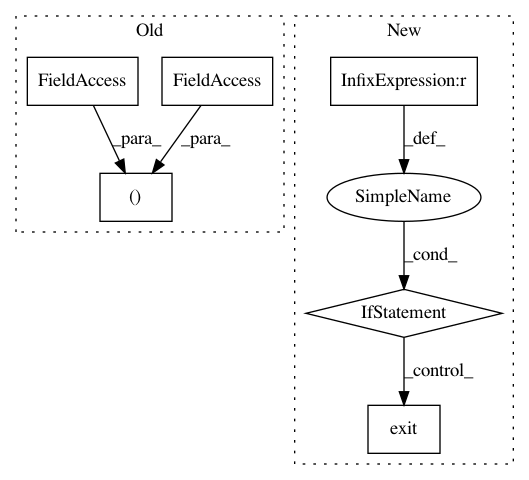

496e3d795c1f33010899f34c2e171a76a3d8e75c,codes/2-basics_in_machine_learning/linear_svm/code/linear_SVM.py,,,#,70
Before Change
// Displaying the desired values.
if (step_idx+1) % FLAGS.log_step == 0:
print("Step //%d, Loss= %f, training accuracy= %f, testing accuracy= %f " % (step_idx+1, loss_step, train_acc_step, test_acc_step))
if FLAGS.is_evaluation:
[[w1], [w2]] = sess.run(W)
After Change
// coor_neg_list = [negative_X, negative_y]
for index, data in enumerate(X):
if y[index] == 1:
positive_X = data[1]
positive_y = data[0]
elif y[index] == 0:
negative_X = data[1]
negative_y = data[0]
else:
sys.exit("Invalid label!")
// Plotting the SVM decision boundary.
plt.plot(positive_X, positive_y, "+", label="Positive")
plt.plot(negative_X, negative_y, "o", label="Negative")
plt.plot(x_line, line, "r-", label="Separator", linewidth=3)
plt.legend(loc="best")
In pattern: SUPERPATTERN
Frequency: 3
Non-data size: 6
Instances
Project Name: astorfi/TensorFlow-World
Commit Name: 496e3d795c1f33010899f34c2e171a76a3d8e75c
Time: 2017-06-14
Author: amirsina.torfi@gmail.com
File Name: codes/2-basics_in_machine_learning/linear_svm/code/linear_SVM.py
Class Name:
Method Name:
Project Name: DenisTome/Lifting-from-the-Deep-release
Commit Name: 70f229dde624412adb0bc466b4eee4929fcc1d91
Time: 2017-07-13
Author: dario.turchi@ocado.com
File Name: demo.py
Class Name:
Method Name:
Project Name: akkana/scripts
Commit Name: cb38a31627f152c22fb9e474c31b34da588e1134
Time: 2020-07-26
Author: akkana@shallowsky.com
File Name: starstack.py
Class Name:
Method Name: